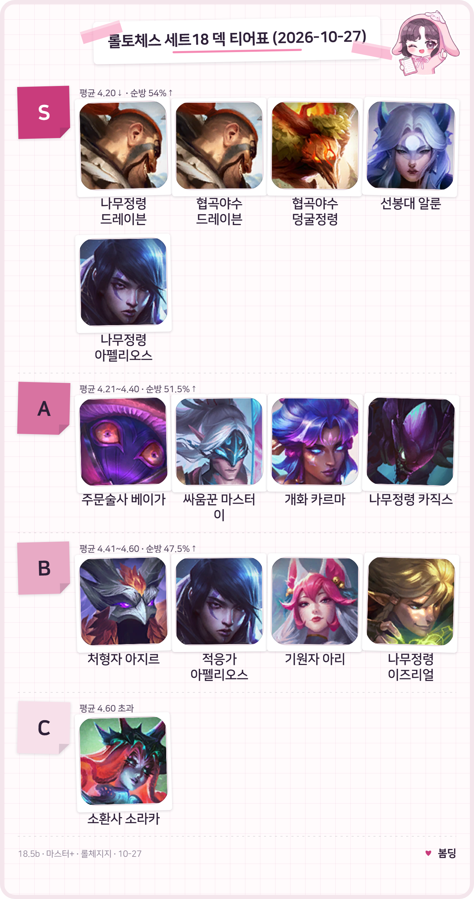
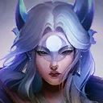

롤토체스 덱 티어 18.5b 마스터+ 평균등수·순방률 기준
롤토체스 덱 티어를 찾고 계셨다면, 이 글은 패치 18.5b 마스터 이상 기록을 평균등수와 4등 이내로 들어온 비율(순방률) 두 기준으로 줄 세운 표예요. 먼저 눈에 띄는 건 점유율과 티어가 따로 논다는 점인데요, 점유율 1위 협곡야수 덩굴정령은 S 티어에 들지만 평균등수 1위는 아니고, 점유율 5위 기원자 아리는 B 티어까지 내려가더라고요. 숫자는 롤체지지 마스터+ 랭크 최근 2일 기록(표본 425,828판)이고, 롤체지지에 예정으로 올라온 18.5c(같은 날 16시 적용 예정) 이전 값이에요. 저는 표를 그리면서 점유율 순서와 티어 순서가 이렇게 다를 줄은 몰랐어요.
롤토체스 덱 티어표, 패치 18.5b 마스터+ 기준
S 티어는 나무정령 드레이븐(이즈리얼·케넨·마오카이 구성), 협곡야수 드레이븐, 협곡야수 덩굴정령, 선봉대 알룬, 나무정령 아펠리오스 다섯 덱이에요. 이름이 같은 나무정령 드레이븐이 하나 더 있는데, 그쪽(6,420판)은 구성이 달라서 아래 자주 묻는 질문에서 따로 풀었어요.

S부터 C까지 14덱을 한 장에 담았어요. 드레이븐과 아펠리오스는 덱이 달라도 같은 챔피언 초상을 쓰니, 아이콘이 같아 보여도 서로 다른 덱이에요.
이미지: 라이엇게임즈 챔피언 아이콘(Community Dragon) / 수치: 롤체지지
- S (평균등수 4.20 이하) 나무정령 드레이븐 4.06과 협곡야수 드레이븐 4.07이 맨 위고, 덩굴정령·알룬·나무정령 아펠리오스가 4.17로 같아요. 다섯 덱 모두 순방률이 54%를 넘겨요.
- A (4.21~4.40) 주문술사 베이가 4.26, 싸움꾼 마스터 이 4.30, 개화 카르마와 나무정령 카직스는 4.39예요. 카르마와 카직스는 A의 경계 4.40에 0.01 차라 아슬아슬하네요.
- B (4.41~4.60) 처형자 아지르 4.47, 적응가 아펠리오스 4.53, 기원자 아리 4.58, 나무정령 이즈리얼 4.59예요. 8명이 겨루는 판의 평균 4.5 근처라 평범한 덱 구간이죠.
- C (4.60 초과) 소환사 소라카가 4.70에 순방률 47.1%예요. 표에 못 그린 덱 중에는 협곡야수 애쉬가 평균 4.99, 순방률 39.6%로 5,000판 이상 23덱 가운데 가장 낮아요.
기준 패치 18.5b(10월 23일 적용) · 마스터+ 랭크 · 최근 2일 · 롤체지지 조회 2026.10.27 11:46 KST · 표본 425,828판 · 18.5c 적용 전 값이에요. 5,000판 이상 23덱 중 대표 14덱만 골라 그렸고, 티어 경계는 제가 직접 나눈 기준이에요.
롤토체스 덱 티어 계산 방식, 평균등수 기준선과 순방률 보정
티어는 평균등수로 먼저 나누고, 순방률이 그 티어의 최소 기준에 못 미치면 한 단계 내리는 방식으로 정했어요.
| 티어 | 평균등수 | 순방률 최소 |
|---|---|---|
| S | 4.20 이하 | 54.0% |
| A | 4.21~4.40 | 51.5% |
| B | 4.41~4.60 | 47.5% |
| C | 4.60 초과 | 제한 없음 |
덱 표본이 5,000판(전체의 약 1.2%) 이상인 덱만 티어를 매겼고, 이번엔 23덱이 통과했어요. 8명이 겨루니 평균 4.5가 중립이라 그 근처를 B로 잡았고, 점유율과 1위 비율은 티어에 넣지 않고 설명에만 썼어요. 순방률은 8명 중 상위 절반인 1~4등에 든 비율이고, 1위 비율은 우승한 판의 비율이에요. 평균등수만 보면 1등과 8등이 섞여 같은 평균이어도 안정감이 다를 수 있어서 순방률을 함께 본 거죠.
직접 계산해 보면 이래요. 협곡야수 덩굴정령은 평균 4.17이라 S 구간이고 순방률 56.3%가 54.0%를 넘으니 그대로 S예요. 개화 카르마는 4.39로 A 구간이고 52.7%가 51.5%를 넘어 A에 남아요. 보정으로 티어가 바뀐 덱은 이번에 한 덱뿐이라서, 사실상 평균등수 순서에 가까운 표라고 보시면 돼요.
롤토체스 덱 티어와 점유율이 갈리는 덱
점유율과 티어는 따로 움직여서, 점유율 1위가 평균등수 1위가 아니고 점유율이 낮은 덱이 맨 위에 서기도 해요.
| 덱 | 점유율 | 평균 | 순방률 | 1위 |
|---|---|---|---|---|
 협곡야수 덩굴정령 협곡야수 덩굴정령 | 15.57% | 4.17 | 56.3% | 13.6% |
| 협곡야수 드레이븐 | 6.09% | 4.07 | 54.8% | 24.9% |
 선봉대 알룬 | 3.10% | 4.17 | 54.4% | 19.6% |
| 적응가 아펠리오스 | 4.26% | 4.53 | 51.0% | 5.6% |
이미지: 라이엇게임즈 챔피언 아이콘(Community Dragon)
협곡야수 덩굴정령은 점유율이 2위의 2.6배라 판마다 자주 만나는 덱이고, 순방률도 5,000판 이상 덱 중 가장 높아요. 다만 1위로 끝나는 비율은 드레이븐이 24.9%, 덩굴정령이 13.6%로 차이가 커서, 상위권을 꾸준히 지키는 쪽은 덩굴정령, 1위를 따내는 쪽은 드레이븐이라고 보시면 돼요. 선봉대 알룬도 점유율은 3.10%에 그치지만 1위 비율 19.6%로 S 안에서 1위가 세 번째로 잦네요. 반대로 적응가 아펠리오스는 점유율 6위로 자주 보이는데 평균 4.53에 1위 비율이 23덱 중 가장 낮더라고요.
- 나무정령 드레이븐은 점유율 2.09%로 작은 덱인데 평균 4.06으로 23덱 중 가장 좋고, 1위 비율도 22.1%예요.
- 기원자 아리는 점유율 5위(5.47%)인데 평균 4.58에 순방률 49.0%로 B예요. 3위 베이가(4.26), 4위 카르마(4.39)와 꽤 벌어져요.
롤토체스 18.5b 덩굴정령 하향과 18.5c 이후 다시 볼 것
18.5b에서는 덩굴정령 챔피언의 적중 시 체력 회복량만 5%에서 4%로 내려갔고, 이 글의 수치는 그 뒤 값이에요. 공식 코멘트 요지는 18.5의 최대 수혜자에게 간 수혜가 다소 과도해서, 방어력 무시 상향은 유지하되 우두머리 표식 회복량은 이전 수치로 되돌렸다는 거예요. 수치는 10월 25일 무렵부터 27일까지라 전 구간이 18.5b이고, 하향은 이미 반영된 값이에요.
이어서 18.5c는 롤체지지 패치노트에만 예정으로 올라 있어서, 아래 내용은 공식 발표와 달라질 수 있어요.
- 덩굴정령: 주문력 기반 방어력 무시 25%에서 10%로 내려가고, 기본 방어력 무시는 25%에서 30%로 올라요. (출처: 롤체지지 패치노트)
- 정의의 손길: 모든 피해 흡혈 15%에서 12%, 찬란한 정의의 손길은 30%에서 25%로 내려가요. (출처: 롤체지지 패치노트)
- 카직스: 기본 피해 250/345/500에서 230/310/450, 고립 시 280/390/590에서 250/350/530으로 내려가요. (출처: 롤체지지 패치노트)
세 가지 모두 위 표의 덱과 이어져요. 덩굴정령 덱은 S 경계 4.20과 0.03 차이고 정의의 손길을 핵심 아이템 중 하나로 쓰며, 나무정령 카직스는 A 경계 4.40과 0.01 차이라 작은 변화에도 티어가 움직일 수 있어요. 롤체지지 기본 화면이 최근 2일 기준이라 18.5c 값만 남으려면 이틀쯤 걸리니, 그때 같은 방식으로 다시 계산해 볼 생각이에요. 경계에 가까운 덱부터 보면 티어가 바뀌는지 가장 빨리 알 수 있겠죠.
자주 묻는 질문
Q. 표본이 모자라 티어를 못 준 덱 중에 성적 좋은 덱은 없나요?
있어요. 기원자 베이가는 1,849판에 평균 4.16·순방률 57.8%, 요정 시비르는 2,674판에 4.12·56.6%, 적응가 렝가는 3,707판에 4.18·56.6%예요. 다만 5,000판에 못 미쳐 하루 이틀 새 값이 크게 흔들릴 수 있어서 티어는 주지 않았어요.
Q. 이름이 같은 덱이 둘일 땐 어떻게 구분했나요?
롤체지지 라벨이 같아도 핵심 유닛이 다르면 따로 셌어요. 나무정령 드레이븐은 이즈리얼·케넨·마오카이 구성이 8,908판에 평균 4.06으로 S, 나르·타릭 구성은 6,420판에 평균 4.17인데 순방률이 53.0%라 S 최소 기준 54.0%에 못 미쳐 A로 한 단계 내렸어요. 사냥꾼 시비르와 전쟁기계 자이라도 덱이 둘씩 올라 있어요.
Q. 예전 점유율 1위 «처형자 소라카»와 이번 «소환사 소라카»는 같은 덱인가요?
아니에요, 별개의 덱이에요. 18.1d 때 점유율 1위(17.56%)였던 건 처형자 소라카이고, 이번 상위 44덱에는 처형자 소라카가 보이지 않아요. 지금 표의 소환사 소라카(10,970판)는 점유율 12위(2.58%)에 평균 4.70, 순방률 47.1%라 C 티어고, 이번 표에서 C에 혼자 있는 덱이에요.
Q. 18.5b에서 덩굴정령 말고 또 뭐가 바뀌었나요?
수호령 가격(골드)이 조정됐어요.
· 주사위 굴리기 업그레이드 3 → 2
· 폭우 업그레이드 3 → 2
· 영웅출현 업그레이드 4 → 2
· 하수인 기본 2 → 5
· 잡동사니 가방 업그레이드 2 → 1
· 월광 의식 기본 2 → 3
버그 수정도 4건 있었는데, 그중 일시적으로 되돌려졌던 18.4 패치의 나무 정령 상징 하향이 올바르게 적용됐다는 한 줄이 눈에 띄네요.
티어표만 보면 점유율 높은 덱이 제일 세 보이는데, 막상 숫자를 뜯어보니 드레이븐 쪽이 훨씬 얄밉게 1위를 잘 따내더라고요~ 18.5c 뒤에 다시 돌려 보고 또 들고 올게요.
✔ 롤토체스 같이 보기 좋은 내용
· 롤토체스 추천메타 요정 트리스타나 덱, 18.5 상향 뒤 성적
· 롤토체스 기원자 아리 조합 아이템 정리, 특성 빌드까지 한 번에
· 롤토체스시즌18 싸움꾼 마스터 이 렝가덱 사용법 공략
참고한 곳
· 라이엇게임즈 공식 — 전략적 팀 전투 패치 18.5 노트와 10월 23일 추가 패치 노트 (조회 2026.10.27)
· 롤체지지 — 덱 통계와 패치노트 (조회 2026.10.27)